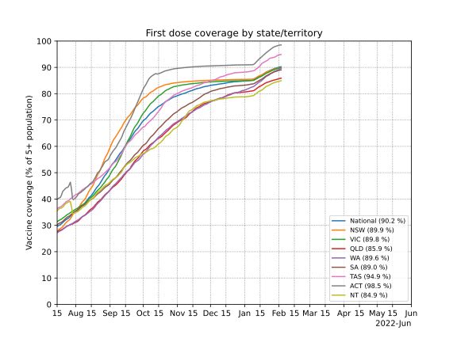
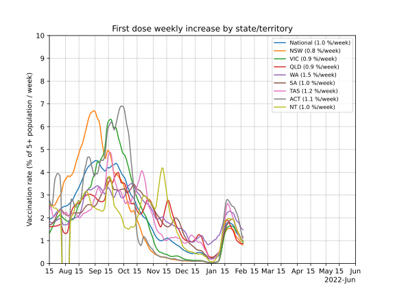
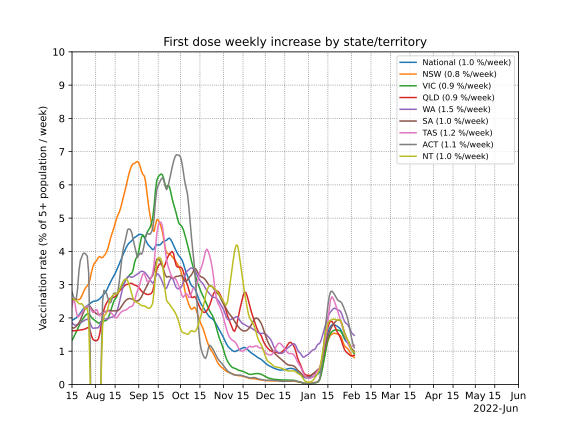
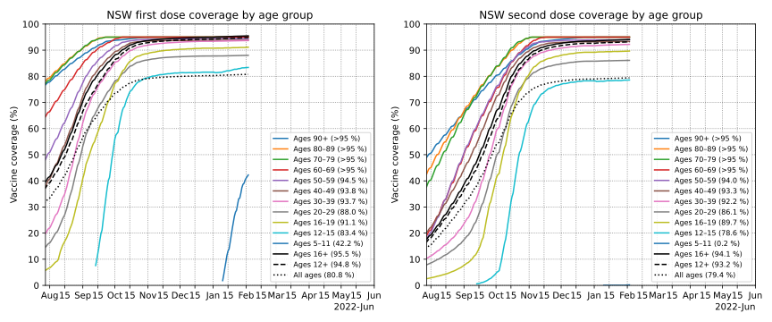

Updates daily in the afternoon
Australian COVID-19 vaccination rollout
New: Progression of the COVID outbreak in New Zealand
New: Progression of the COVID outbreak in Victoria
New: Progression of the COVID outbreak in the Australian Capital Territory
See also: Progression of the COVID outbreak in New South Wales
See also: The road to a COVID-free Victoria (old 2020 second wave plots)
Contents
Daily doses by administration channel
Below is a plot of 7-day average of daily vaccine doses administered in Australia by administration channel, showing the daily number of doses administered by state vaccination clinics, and by GPs and in federally operated aged and disability care. The 7-day average is further smoothed to remove day-to-day random fluctuations using Gaussian smoothing with σ=1 days.
Projected doses are based on expected supply smoothed over several weeks after supply becomes available, the asumption that second doses are reserved and administered on time as described in the Estimated utilisation section, and allowing for 12.5% wastage of AZ and 5% wastage of Pfizer/Moderna.
Data note 1: 80,560 GP-administered doses were reported on April 19th that were administered "prior to April 17". These have been incorporated into the data by spreading them over the period from March 22nd (start of phase 1b) to April 16th in proportion to the daily rate of GP-adminsitered doses on each day.
Data note 2: A correction to of -9,260 doses to VIC's state-clinic numbers was made on May 25th. These have been incorporated into the data by spreading them over the period from March 22nd (start of phase 1b) to April May 23rd in proportion to the daily rate of VIC state-clinic-adminsitered doses on each day.

Daily doses by weekday
Below is a plot of national daily doses by weekday, for the past five weeks. No averaging or smoothing has been done.

Cumulative doses
Below is a simple plot of cumulative doses in Australia over time by administration channel, showing the cumulative number of doses administered by state vaccination clinics, and by GPs and in federally operated aged and disability care. Australia aims to vaccinate all eligible people with at least one dose by the end of 2021.
Projected doses are based on expected supply smoothed over several weeks after supply becomes available, the assumption that second doses are reserved and administered on time as described in the Estimated utilisation section, and allowing for 12.5% wastage of AZ and 5% wastage of Pfizer/Moderna.

First and second dose coverage by age group
Below are plots of the percentage of each 10-year age group that has had a first and second administered, as well as the weekly rate of uptake as a percentage of each age group. Note that first dose data by age group is only available from May 9th, and second dose data from June 30th. The 12–15 and 16–19 age groups are kept separate rather than as a single 12–19 group, due to the 12–15 age group becoming eligible much later, making it more interesting to show as a separate group.


First and second dose coverage by state/territory
Below are plots of the percentage of the resident population aged 12+ in each state/territory that has had a first and second dose administered, as well as the weekly rate of uptake, as a percentage of each state/territory's age 12+ population. For a more detailed age breakdown, including 16+ coverage by state, see the next section.
 


First and second dose coverage by state/territory and age group
Below are plots of the percentage of the resident population in each state and territory that has had a first and second dose administered, by age group.
Included are also projections of when various targets would be met, assuming the current seven-day average rate of first-doses, and the current average dosing interval in each state. These should be taken with a grain of salt, as the rate of first-doses, as well as the dosing intervals, may change.
National

Ages 16+
78.5% first-dose coverage 💉
55.1% second-dose coverage 💉💉
0.52%/day first-dose rate
0.71%/day second-dose rate
37 days average dosing interval
1st dose targets 💉 (@ current 1st dose rate)
60%: ✅ September 1st (30 days ago)
70%: ✅ September 16th (15 days ago)
80%: October 3rd (2 days)
90%: October 23rd (22 days)
2nd dose targets 💉💉 (@ current 1st dose rate + interval)
60%: October 8th (7 days)
70%: October 23rd (22 days)
80%: November 9th (40 days)
90%: November 29th (59 days)
|
Ages 12+
76.3% first-dose coverage 💉
52.2% second-dose coverage 💉💉
0.61%/day first-dose rate
0.68%/day second-dose rate
37 days average dosing interval
1st dose targets 💉 (@ current 1st dose rate)
60%: ✅ September 6th (25 days ago)
70%: ✅ September 21st (10 days ago)
80%: October 7th (6 days)
90%: October 23rd (22 days)
2nd dose targets 💉💉 (@ current 1st dose rate + interval)
60%: October 13th (12 days)
70%: October 28th (27 days)
80%: November 13th (43 days)
90%: November 29th (60 days)
|
New South Wales

Ages 16+
87.7% first-dose coverage 💉
65.2% second-dose coverage 💉💉
0.43%/day first-dose rate
1.06%/day second-dose rate
35 days average dosing interval
1st dose targets 💉 (@ current 1st dose rate)
60%: ✅ August 23rd (39 days ago)
70%: ✅ September 1st (30 days ago)
80%: ✅ September 14th (17 days ago)
90%: October 6th (5 days)
2nd dose targets 💉💉 (@ current 1st dose rate + interval)
60%: ✅ September 25th (6 days ago)
70%: October 6th (5 days)
80%: October 19th (18 days)
90%: November 10th (40 days)
|
Ages 12+
85.8% first-dose coverage 💉
61.8% second-dose coverage 💉💉
0.56%/day first-dose rate
1.01%/day second-dose rate
34 days average dosing interval
1st dose targets 💉 (@ current 1st dose rate)
60%: ✅ August 26th (36 days ago)
70%: ✅ September 6th (25 days ago)
80%: ✅ September 21st (10 days ago)
90%: October 8th (7 days)
2nd dose targets 💉💉 (@ current 1st dose rate + interval)
60%: ✅ September 29th (2 days ago)
70%: October 10th (9 days)
80%: October 25th (24 days)
90%: November 11th (42 days)
|
Victoria

Ages 16+
80.8% first-dose coverage 💉
50.6% second-dose coverage 💉💉
0.64%/day first-dose rate
0.58%/day second-dose rate
41 days average dosing interval
1st dose targets 💉 (@ current 1st dose rate)
60%: ✅ September 4th (27 days ago)
70%: ✅ September 16th (15 days ago)
80%: ✅ September 29th (2 days ago)
90%: October 15th (14 days)
2nd dose targets 💉💉 (@ current 1st dose rate + interval)
60%: October 15th (14 days)
70%: October 27th (26 days)
80%: November 9th (39 days)
90%: November 25th (55 days)
|
Ages 12+
78.9% first-dose coverage 💉
48.0% second-dose coverage 💉💉
0.75%/day first-dose rate
0.55%/day second-dose rate
41 days average dosing interval
1st dose targets 💉 (@ current 1st dose rate)
60%: ✅ September 8th (23 days ago)
70%: ✅ September 20th (11 days ago)
80%: October 2nd (1 days)
90%: October 15th (14 days)
2nd dose targets 💉💉 (@ current 1st dose rate + interval)
60%: October 19th (18 days)
70%: October 31st (30 days)
80%: November 12th (42 days)
90%: November 25th (56 days)
|
Queensland

Ages 16+
66.4% first-dose coverage 💉
47.4% second-dose coverage 💉💉
0.51%/day first-dose rate
0.49%/day second-dose rate
38 days average dosing interval
1st dose targets 💉 (@ current 1st dose rate)
60%: ✅ September 19th (12 days ago)
70%: October 8th (7 days)
80%: October 27th (26 days)
90%: November 16th (46 days)
2nd dose targets 💉💉 (@ current 1st dose rate + interval)
60%: October 27th (26 days)
70%: November 15th (45 days)
80%: December 4th (65 days)
90%: December 24th (84 days)
|
Ages 12+
63.8% first-dose coverage 💉
44.6% second-dose coverage 💉💉
0.56%/day first-dose rate
0.46%/day second-dose rate
38 days average dosing interval
1st dose targets 💉 (@ current 1st dose rate)
60%: ✅ September 24th (7 days ago)
70%: October 12th (11 days)
80%: October 30th (29 days)
90%: November 17th (47 days)
2nd dose targets 💉💉 (@ current 1st dose rate + interval)
60%: November 1st (31 days)
70%: November 19th (49 days)
80%: December 7th (67 days)
90%: December 25th (85 days)
|
Western Australia

Ages 16+
65.4% first-dose coverage 💉
47.1% second-dose coverage 💉💉
0.42%/day first-dose rate
0.45%/day second-dose rate
38 days average dosing interval
1st dose targets 💉 (@ current 1st dose rate)
60%: ✅ September 19th (12 days ago)
70%: October 11th (10 days)
80%: November 4th (34 days)
90%: November 28th (58 days)
2nd dose targets 💉💉 (@ current 1st dose rate + interval)
60%: October 27th (26 days)
70%: November 18th (49 days)
80%: December 12th (72 days)
90%: January 5th (96 days)
|
Ages 12+
62.4% first-dose coverage 💉
44.3% second-dose coverage 💉💉
0.46%/day first-dose rate
0.43%/day second-dose rate
37 days average dosing interval
1st dose targets 💉 (@ current 1st dose rate)
60%: ✅ September 25th (6 days ago)
70%: October 17th (16 days)
80%: November 8th (38 days)
90%: November 30th (60 days)
2nd dose targets 💉💉 (@ current 1st dose rate + interval)
60%: November 1st (31 days)
70%: November 23rd (54 days)
80%: December 15th (75 days)
90%: January 6th (97 days)
|
South Australia

Ages 16+
68.4% first-dose coverage 💉
50.2% second-dose coverage 💉💉
0.47%/day first-dose rate
0.53%/day second-dose rate
38 days average dosing interval
1st dose targets 💉 (@ current 1st dose rate)
60%: ✅ September 14th (17 days ago)
70%: October 4th (3 days)
80%: October 25th (24 days)
90%: November 15th (45 days)
2nd dose targets 💉💉 (@ current 1st dose rate + interval)
60%: October 22nd (21 days)
70%: November 11th (41 days)
80%: December 2nd (63 days)
90%: December 23rd (84 days)
|
Ages 12+
65.6% first-dose coverage 💉
47.5% second-dose coverage 💉💉
0.51%/day first-dose rate
0.50%/day second-dose rate
38 days average dosing interval
1st dose targets 💉 (@ current 1st dose rate)
60%: ✅ September 20th (11 days ago)
70%: October 9th (8 days)
80%: October 29th (28 days)
90%: November 18th (48 days)
2nd dose targets 💉💉 (@ current 1st dose rate + interval)
60%: October 28th (27 days)
70%: November 16th (47 days)
80%: December 6th (66 days)
90%: December 26th (86 days)
|
Tasmania

Ages 16+
76.8% first-dose coverage 💉
59.3% second-dose coverage 💉💉
0.44%/day first-dose rate
0.59%/day second-dose rate
32 days average dosing interval
1st dose targets 💉 (@ current 1st dose rate)
60%: ✅ August 31st (31 days ago)
70%: ✅ September 17th (14 days ago)
80%: October 8th (7 days)
90%: October 30th (29 days)
2nd dose targets 💉💉 (@ current 1st dose rate + interval)
60%: October 2nd (1 days)
70%: October 19th (18 days)
80%: November 9th (39 days)
90%: December 1st (62 days)
|
Ages 12+
73.3% first-dose coverage 💉
56.0% second-dose coverage 💉💉
0.47%/day first-dose rate
0.56%/day second-dose rate
32 days average dosing interval
1st dose targets 💉 (@ current 1st dose rate)
60%: ✅ September 7th (24 days ago)
70%: ✅ September 23rd (8 days ago)
80%: October 15th (14 days)
90%: November 5th (35 days)
2nd dose targets 💉💉 (@ current 1st dose rate + interval)
60%: October 9th (8 days)
70%: October 25th (24 days)
80%: November 16th (46 days)
90%: December 7th (68 days)
|
Australian Capital Territory

Ages 16+
91.2% first-dose coverage 💉
64.8% second-dose coverage 💉💉
0.89%/day first-dose rate
0.76%/day second-dose rate
31 days average dosing interval
1st dose targets 💉 (@ current 1st dose rate)
60%: ✅ August 23rd (39 days ago)
70%: ✅ September 6th (25 days ago)
80%: ✅ September 18th (13 days ago)
90%: ✅ September 29th (2 days ago)
2nd dose targets 💉💉 (@ current 1st dose rate + interval)
60%: ✅ September 24th (7 days ago)
70%: October 7th (6 days)
80%: October 19th (18 days)
90%: October 30th (29 days)
|
Ages 12+
89.4% first-dose coverage 💉
61.4% second-dose coverage 💉💉
1.10%/day first-dose rate
0.73%/day second-dose rate
31 days average dosing interval
1st dose targets 💉 (@ current 1st dose rate)
60%: ✅ August 27th (35 days ago)
70%: ✅ September 11th (20 days ago)
80%: ✅ September 22nd (9 days ago)
90%: October 1st (0 days)
2nd dose targets 💉💉 (@ current 1st dose rate + interval)
60%: ✅ September 29th (2 days ago)
70%: October 12th (11 days)
80%: October 23rd (22 days)
90%: November 1st (32 days)
|
Northern Territory

Ages 16+
66.4% first-dose coverage 💉
53.0% second-dose coverage 💉💉
0.28%/day first-dose rate
0.44%/day second-dose rate
37 days average dosing interval
1st dose targets 💉 (@ current 1st dose rate)
60%: ✅ September 11th (20 days ago)
70%: October 13th (12 days)
80%: November 18th (48 days)
90%: December 23rd (83 days)
2nd dose targets 💉💉 (@ current 1st dose rate + interval)
60%: October 18th (17 days)
70%: November 19th (50 days)
80%: December 25th (85 days)
90%: January 29th (121 days)
|
Ages 12+
64.2% first-dose coverage 💉
50.3% second-dose coverage 💉💉
0.31%/day first-dose rate
0.47%/day second-dose rate
35 days average dosing interval
1st dose targets 💉 (@ current 1st dose rate)
60%: ✅ September 18th (13 days ago)
70%: October 20th (19 days)
80%: November 21st (51 days)
90%: December 24th (84 days)
2nd dose targets 💉💉 (@ current 1st dose rate + interval)
60%: October 23rd (22 days)
70%: November 24th (54 days)
80%: December 26th (87 days)
90%: January 28th (120 days)
|
Longer-term projections
Below is a possible scenario for the vaccination program over the course of the year. This assumes that we keep up with supply, administering doses in the weeks following them becoming available, up until 21.85M people (the number of people in Australia aged 12+) have been vaccinated, with a maximum of 7.55M people receiving the AstraZeneca vaccine.
This assumes second doses are reserved and administered on time as described in the Estimated utilisation section, and allows for 12.5% wastage of AZ and 5% wastage of Pfizer/Moderna.
Approximate expected supply of mRNA vaccines (based on the federal allocation horizons document here, as well as other comments made in press conference) is 1125k per week in August, then 1M Pfizer plus 200k Moderna per week in September, then 2M Pfizer plus 750k Moderna per week starting in October.
Expected supply of the AstraZeneca vaccine is 1M doses per week.


Note: The "Phase B" and "Phase C" lines in the above plot show the date when 70% and 80% of the eligible population (ages 12+) are projected to have received two doses. However, in the national plan, these targets are framed in terms of the 16+ population. Thus these projected dates assume that vaccination coverage in the 12–15 age group is similar at these points to that of the 16+ age group.
Estimated utilisation
Below is a plot of the estimated status of each vaccine dose in Australia. How many doses are in people's arms, in reserve, or available? This helps show whether administration of doses is keeping up with supply. Since the government has not published data to determine this exactly, this estimate is based on a number of assumptions:
- That the number of Pfizer/Moderna and AstraZeneca first doses administered on a given day is in proportion to the number of available doses of each type of vaccine on that day, weighted by a "demand factor" equal to 2.0 for Pfizer and 1.0 for AstraZeneca.
- That prior to May 27th, 50% of Pfizer supply is held in reserve for second doses, and after May 27th, that a Pfizer/Moderna reserve is maintained equal to 40% of outstanding second doses. Pfizer/Moderna second doses are administered exactly 25 days after the first dose (Pfizer should be 21 days and Moderna 28m, but I'm treating them the same for simplicity),
- Prior to mid-April, that 50% of AstraZeneca supply is held in reserve for second doses. After mid-April (when the government became confident enough in local supply to maintain a smaller reserve), that a reserve is maintained with a number of doses equal top 66% of all outstanding second doses. AstraZeneca second doses are administered exactly 11 weeks after the first dose. (for most people, this is 12 weeks, but for some in areas with active outbreaks it is much earlier, so I'm using an intermediate value to approximate both situations)
- That doses becoming available in a given week (supply data is only available at the 1-week level) become available at the end of that week.
- That 12.5% of of AZ and 5% of Pfizer/Moderna doses are wasted (these are not shown in the utilisation plots).

Estimated utilisation by vaccine type
Below is the same utilisation estimates as in the above plot, but separated by vaccine type: AstraZeneca vs Pfizer/Moderna (which are lumped together).


Data sources and contact
Source for vaccine supply and expected supply: covid19data.com.au
Source for daily/cumulative dose numbers: covidlive.com.au.
Source for first doses by age group prior to June 30th: Department of Health, data extracted from government materials by covidbaseau.com.
Source for first and second doses by age group from June 30th: Department of Health, data extracted from government materials by Ken Tsang
Population data from the Australian Bureau of Statistics Estimated Resident Population, June 2020
Plots and analysis by Chris Billington. Contact: chrisjbillington [at] gmail [dot] com
Python script for producing the plots is available on GitHub.